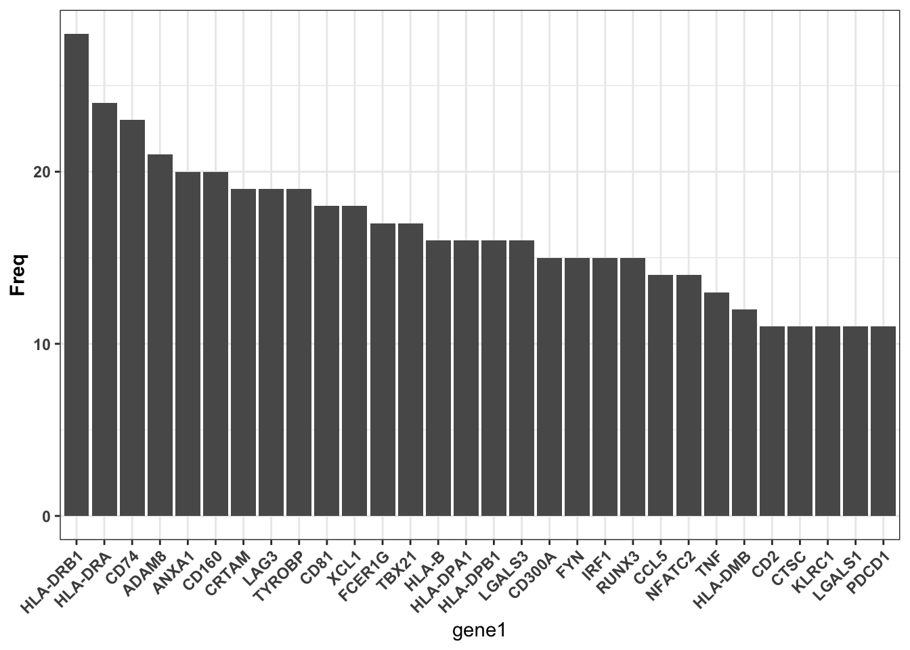

Last updated: 2021-08-12
Checks: 7 0
Knit directory: myproject/
This reproducible R Markdown analysis was created with workflowr (version 1.6.2). The Checks tab describes the reproducibility checks that were applied when the results were created. The Past versions tab lists the development history.
Great! Since the R Markdown file has been committed to the Git repository, you know the exact version of the code that produced these results.
Great job! The global environment was empty. Objects defined in the global environment can affect the analysis in your R Markdown file in unknown ways. For reproduciblity it’s best to always run the code in an empty environment.
The command set.seed(20210812) was run prior to running the code in the R Markdown file. Setting a seed ensures that any results that rely on randomness, e.g. subsampling or permutations, are reproducible.
Great job! Recording the operating system, R version, and package versions is critical for reproducibility.
Nice! There were no cached chunks for this analysis, so you can be confident that you successfully produced the results during this run.
Great job! Using relative paths to the files within your workflowr project makes it easier to run your code on other machines.
Great! You are using Git for version control. Tracking code development and connecting the code version to the results is critical for reproducibility.
The results in this page were generated with repository version 9b32803. See the Past versions tab to see a history of the changes made to the R Markdown and HTML files.
Note that you need to be careful to ensure that all relevant files for the analysis have been committed to Git prior to generating the results (you can use wflow_publish or wflow_git_commit). workflowr only checks the R Markdown file, but you know if there are other scripts or data files that it depends on. Below is the status of the Git repository when the results were generated:
Ignored files:
Ignored: .DS_Store
Ignored: .Rhistory
Ignored: .Rproj.user/
Ignored: analysis/.DS_Store
Untracked files:
Untracked: genes_up_GO.RData
Unstaged changes:
Modified: analysis/_site.yml
Note that any generated files, e.g. HTML, png, CSS, etc., are not included in this status report because it is ok for generated content to have uncommitted changes.
These are the previous versions of the repository in which changes were made to the R Markdown (analysis/functional_enrichment.Rmd) and HTML (docs/functional_enrichment.html) files. If you’ve configured a remote Git repository (see ?wflow_git_remote), click on the hyperlinks in the table below to view the files as they were in that past version.
| File | Version | Author | Date | Message |
|---|---|---|---|---|
| Rmd | 9b32803 | zhouwl | 2021-08-12 | Publish the initial files for myproject |
该教程是将上调基因和下调基因分别进行富集分析。
library(ggplot2)
library(org.Hs.eg.db)
library(clusterProfiler)rm(list = ls())
download.file("https://cdn.jsdelivr.net/gh/lily123920/figures@main/uPic/degs_t_test%E7%9A%84%E5%89%AF%E6%9C%AC.csv",
destfile = "degs_t_test.csv")
degs <- read.csv("degs_t_test.csv", header = T)
degs <- textshape::column_to_rownames(degs)
head(degs) p_val avg_log2FC pct.1 pct.2 p_val_adj
CCL5 6.702040e-193 2.714268 0.725 0.120 1.427266e-188
LDHB 1.418228e-168 -1.585190 0.511 0.924 3.020259e-164
GZMA 4.844229e-168 2.602722 0.687 0.132 1.031627e-163
LTB 1.843616e-158 -1.476611 0.510 0.921 3.926166e-154
EIF3E 5.620325e-144 -1.431147 0.524 0.900 1.196904e-139
NPM1 3.966687e-142 -1.415790 0.649 0.954 8.447456e-138不同阈值筛选的DEGs的个数是不同的。 首先，确定阈值，筛选到合适个数的DEGs; 然后，确定下调和上调基因。。。 这里，up为疾病组上调，命名为genes_up; down为对照组相对上调，命名为genes_down.
p_val_adj <- 0.05
degs_q <- degs[degs$p_val_adj < p_val_adj,]
genes_up <- rownames(degs_q)[degs_q$avg_log2FC > 0]
genes_down <- rownames(degs_q)[degs_q$avg_log2FC < 0]
genes_up[1:4]; genes_down[1:4][1] "CCL5" "GZMA" "GZMK" "CST7"[1] "LDHB" "LTB" "EIF3E" "NPM1" 小结：进行KEGG和GO富集分析，只需要得到基因集列表（不需要任何和表达相关的信息）即可。
得到基因名称列表后，需要将其转换成entrezID才可以。
library(org.Hs.eg.db)
library(clusterProfiler)
entrezid_up <- bitr(genes_up, "SYMBOL", "ENTREZID", "org.Hs.eg.db")Warning in bitr(genes_up, "SYMBOL", "ENTREZID", "org.Hs.eg.db"): 4.42% of input
gene IDs are fail to map...entrezid_down <- bitr(genes_down, "SYMBOL", "ENTREZID", "org.Hs.eg.db")Warning in bitr(genes_down, "SYMBOL", "ENTREZID", "org.Hs.eg.db"): 7.78% of
input gene IDs are fail to map...entrez_up <- entrezid_up$ENTREZID
entrez_down <- entrezid_down$ENTREZID
#entrezList <- list(entrez_pbmc, entrez_pla)entrez_up[1:4];entrez_down[1:4][1] "6352" "3001" "3003" "8530"[1] "3945" "4050" "3646" "4869"GO富集分析的本质是超几何检验。。。 影响GO富集分析结果的输入包括：使用的数据库。
# GO <- enrichGO(
# entrez_up, keyType = "ENTREZID",
# OrgDb='org.Hs.eg.db',
# ont = "ALL", # 使用哪个条目进行注释，GO数据库有三个条目，分别是MF,BP,CC.
# pvalueCutoff = 0.05,
# pAdjustMethod = "BH", qvalueCutoff = 0.2,
# #universe,
# #minGSSize = 10,maxGSSize = 500,
# readable = TRUE, # 输出结果中会直接将ENTREZID转换为SYMBOL
# pool = FALSE
# )
# save(GO, file = "genes_up_GO.RData")
download.file("https://cdn.jsdelivr.net/gh/lily123920/figures@main/uPic/genes_up_GO.RData", destfile = "genes_up_GO.RData")
load("genes_up_GO.RData")# 确定配色
color = rep(c("red","black"),15)
# 确定美学主题
theme_customized = theme(plot.margin = unit(c(3, 3, 10, 3), "mm"),
plot.title = element_text(hjust = 0.5, face = "bold"),
axis.text.x = element_text(angle = -90,hjust = 0,vjust = 0.5,
color = color,
face = "bold"))Warning: Vectorized input to `element_text()` is not officially supported.
Results may be unexpected or may change in future versions of ggplot2.# 开始绘图
dot_GO <- dotplot(GO,x="GeneRatio",showCategory=10,
font.size=12,title="GO enrichment",
split = "ONTOLOGY" ) + coord_flip() +
facet_grid(cols = vars(ONTOLOGY), scale="free") +
scale_y_discrete(labels=function(y) stringr::str_wrap(y,width=36)) +
theme_customizedScale for 'y' is already present. Adding another scale for 'y', which will
replace the existing scale.dot_GO相同的颜色总是对应相同的数值
这张图主要是看通路之间交集的基因。。。。 如果一些基因介导了多条被富集到的通路，那么该基因可能会存在潜在的生物学效应。
library(ggnewscale)
cne_GO <- cnetplot(GO, foldChange=genes_up, categorySize="pvalue",
showCategory = 3, colorEdge = TRUE)
cne_GO相同的颜色总是对应相同的数值
这个图的作用同前，主要是为了chec基因在富集到的通路中出现的频次。
heat_GO <- heatplot(GO) + coord_flip()
heat_GO相同的颜色总是对应相同的数值
my_data <- GO@result[GO@result$Count >= 20,]
genelist <- my_data$geneID %>%
stringr::str_split(., "/") %>%
unlist() %>%
table() %>%
as.data.frame()
genelist <- genelist[order(genelist$Freq,decreasing = T),]
head(genelist) . Freq
54 HLA-DRB1 28
53 HLA-DRA 24
20 CD74 23
1 ADAM8 21
3 ANXA1 20
14 CD160 20colnames(genelist) <- c("gene","Freq")
genelist$gene1 <- factor(genelist$gene, levels = genelist$gene)
str(genelist)'data.frame': 109 obs. of 3 variables:
$ gene : Factor w/ 109 levels "ADAM8","AKNA",..: 54 53 20 1 3 14 25 65 106 21 ...
$ Freq : int 28 24 23 21 20 20 19 19 19 18 ...
$ gene1: Factor w/ 109 levels "HLA-DRB1","HLA-DRA",..: 1 2 3 4 5 6 7 8 9 10 ... p <- ggplot(genelist[1:30,], aes(x = gene1, y = Freq )) +
geom_bar(stat = "identity") +
theme_bw() +
theme(axis.text.x = element_text(angle = 45, hjust = 1, face = "bold"),
axis.title.y = element_text( face = "bold"),
axis.text.y = element_text( face = "bold"))
p
kegg <- enrichKEGG(
entrez_up, keyType = "kegg",
organism = "hsa",
pvalueCutoff = 0.05, pAdjustMethod = "BH", qvalueCutoff = 0.2,
# universe,
minGSSize = 10,maxGSSize = 500,
use_internal_data = FALSE
)Reading KEGG annotation online:
Reading KEGG annotation online:kegg#
# over-representation test
#
#...@organism hsa
#...@ontology KEGG
#...@keytype kegg
#...@gene chr [1:238] "6352" "3001" "3003" "8530" "6351" "4818" "2353" "5552" "5996" ...
#...pvalues adjusted by 'BH' with cutoff <0.05
#...53 enriched terms found
'data.frame': 53 obs. of 9 variables:
$ ID : chr "hsa05332" "hsa04612" "hsa05330" "hsa04940" ...
$ Description: chr "Graft-versus-host disease" "Antigen processing and presentation" "Allograft rejection" "Type I diabetes mellitus" ...
$ GeneRatio : chr "16/133" "19/133" "14/133" "14/133" ...
$ BgRatio : chr "42/8096" "78/8096" "38/8096" "43/8096" ...
$ pvalue : num 1.30e-18 9.98e-18 3.60e-16 2.72e-15 6.60e-14 ...
$ p.adjust : num 2.82e-16 1.08e-15 2.60e-14 1.48e-13 2.86e-12 ...
$ qvalue : num 2.11e-16 8.09e-16 1.95e-14 1.10e-13 2.14e-12 ...
$ geneID : chr "3824/5551/3123/3113/3127/3115/3122/3117/3821/3119/3108/3002/3109/7124/3106/3107" "925/972/3824/3123/3113/3127/3115/926/3304/3122/3117/3821/3119/3108/3109/7124/3303/3106/3107" "5551/3123/3113/3127/3115/3122/3117/3119/3108/3002/3109/7124/3106/3107" "5551/3123/3113/3127/3115/3122/3117/3119/3108/3002/3109/7124/3106/3107" ...
$ Count : int 16 19 14 14 16 17 14 11 13 19 ...
#...Citation
Guangchuang Yu, Li-Gen Wang, Yanyan Han and Qing-Yu He.
clusterProfiler: an R package for comparing biological themes among
gene clusters. OMICS: A Journal of Integrative Biology
2012, 16(5):284-287 # 确定配色
# 确定主题
theme_customized <- theme(
axis.text.y = element_blank(),
axis.ticks.y = element_blank(),
plot.title = element_text(hjust = 0.5, face = "bold"))
# 开始绘图
barplot_kegg <- graphics::barplot(kegg,
drop = FALSE,
showCategory = 20,
title = "KEGG enrichment analysis",
font.size = 8) +
geom_text(aes(label = Description),x=0,hjust=0)+
theme_customized
barplot_kegg相同的颜色总是对应相同的数值
# 确定配色
# 确定主题
theme_customized <- theme(plot.margin = unit(c(3, 3, 10, 3), "mm"),
plot.title = element_text(hjust = 0.5, face = "bold"),
axis.text.y = element_text(angle = 0,hjust = 0,vjust = 0,
color = rep(c("red","black"),15),
face = "bold"))Warning: Vectorized input to `element_text()` is not officially supported.
Results may be unexpected or may change in future versions of ggplot2.dot_kegg <- dotplot(kegg,x="GeneRatio",showCategory=20,
font.size=12,title="kegg enrichment") +
theme_customized +
scale_y_discrete(labels=function(y) stringr::str_wrap(y,width=36)) # 折叠纵坐标Scale for 'y' is already present. Adding another scale for 'y', which will
replace the existing scale.dot_kegg相同的颜色总是对应相同的数值
完结。。。 对于富集结果信息的挖掘，需要注意一点：上调基因和下调基因可能会富集到同一条通路哦。。。 这时候结果该怎么解读呢？其实同一条通路中的不同基因也会介导不同的功能的。 不管是KEGG还是GO富集分析，研究者所关注的是这些基因的功能。 富集分析的终点是对这些差异基因功能解读。 如何解读呢？ ①富集到某条通路，说明这条通路相关的功能确实是和该疾病状态相关的。 毕竟不同的疾病的DEGs富集到的通路是不同的。 ②一条通路中涉及的基因是有可能起着不同的作用的。。。所以下一步要筛选 感兴趣的通路，然后check富集到这些通路的基因具体起着什么样的作用。
sessionInfo()R version 4.1.0 (2021-05-18)
Platform: x86_64-apple-darwin17.0 (64-bit)
Running under: macOS Big Sur 10.16
Matrix products: default
BLAS: /Library/Frameworks/R.framework/Versions/4.1/Resources/lib/libRblas.dylib
LAPACK: /Library/Frameworks/R.framework/Versions/4.1/Resources/lib/libRlapack.dylib
locale:
[1] zh_CN.UTF-8/zh_CN.UTF-8/zh_CN.UTF-8/C/zh_CN.UTF-8/zh_CN.UTF-8
attached base packages:
[1] parallel stats4 stats graphics grDevices utils datasets
[8] methods base
other attached packages:
[1] ggnewscale_0.4.5 clusterProfiler_4.0.2 org.Hs.eg.db_3.13.0
[4] AnnotationDbi_1.54.1 IRanges_2.26.0 S4Vectors_0.30.0
[7] Biobase_2.52.0 BiocGenerics_0.38.0 ggplot2_3.3.5
[10] workflowr_1.6.2
loaded via a namespace (and not attached):
[1] fgsea_1.18.0 colorspace_2.0-2 ggtree_3.0.2
[4] ellipsis_0.3.2 rprojroot_2.0.2 qvalue_2.24.0
[7] XVector_0.32.0 fs_1.5.0 aplot_0.0.6
[10] farver_2.1.0 graphlayouts_0.7.1 ggrepel_0.9.1
[13] bit64_4.0.5 scatterpie_0.1.6 fansi_0.5.0
[16] splines_4.1.0 cachem_1.0.5 GOSemSim_2.18.1
[19] knitr_1.33 polyclip_1.10-0 jsonlite_1.7.2
[22] GO.db_3.13.0 png_0.1-7 ggforce_0.3.3
[25] BiocManager_1.30.16 compiler_4.1.0 httr_1.4.2
[28] rvcheck_0.1.8 assertthat_0.2.1 Matrix_1.3-4
[31] fastmap_1.1.0 lazyeval_0.2.2 later_1.2.0
[34] tweenr_1.0.2 htmltools_0.5.1.1 tools_4.1.0
[37] igraph_1.2.6 gtable_0.3.0 glue_1.4.2
[40] GenomeInfoDbData_1.2.6 reshape2_1.4.4 DO.db_2.9
[43] dplyr_1.0.7 fastmatch_1.1-3 Rcpp_1.0.7
[46] enrichplot_1.12.2 jquerylib_0.1.4 vctrs_0.3.8
[49] Biostrings_2.60.2 ape_5.5 nlme_3.1-152
[52] ggraph_2.0.5 xfun_0.25 stringr_1.4.0
[55] lifecycle_1.0.0 DOSE_3.18.1 zlibbioc_1.38.0
[58] MASS_7.3-54 scales_1.1.1 tidygraph_1.2.0
[61] promises_1.2.0.1 RColorBrewer_1.1-2 yaml_2.2.1
[64] memoise_2.0.0 gridExtra_2.3 downloader_0.4
[67] sass_0.4.0 stringi_1.7.3 RSQLite_2.2.7
[70] highr_0.9 tidytree_0.3.4 BiocParallel_1.26.1
[73] GenomeInfoDb_1.28.1 rlang_0.4.11 pkgconfig_2.0.3
[76] bitops_1.0-7 evaluate_0.14 lattice_0.20-44
[79] purrr_0.3.4 labeling_0.4.2 treeio_1.16.1
[82] patchwork_1.1.1 shadowtext_0.0.8 cowplot_1.1.1
[85] bit_4.0.4 tidyselect_1.1.1 plyr_1.8.6
[88] magrittr_2.0.1 R6_2.5.0 generics_0.1.0
[91] DBI_1.1.1 pillar_1.6.2 whisker_0.4
[94] withr_2.4.2 KEGGREST_1.32.0 RCurl_1.98-1.3
[97] textshape_1.7.3 tibble_3.1.3 crayon_1.4.1
[100] utf8_1.2.2 rmarkdown_2.10 viridis_0.6.1
[103] grid_4.1.0 data.table_1.14.0 blob_1.2.2
[106] git2r_0.28.0 digest_0.6.27 tidyr_1.1.3
[109] httpuv_1.6.1 munsell_0.5.0 viridisLite_0.4.0
[112] bslib_0.2.5.1